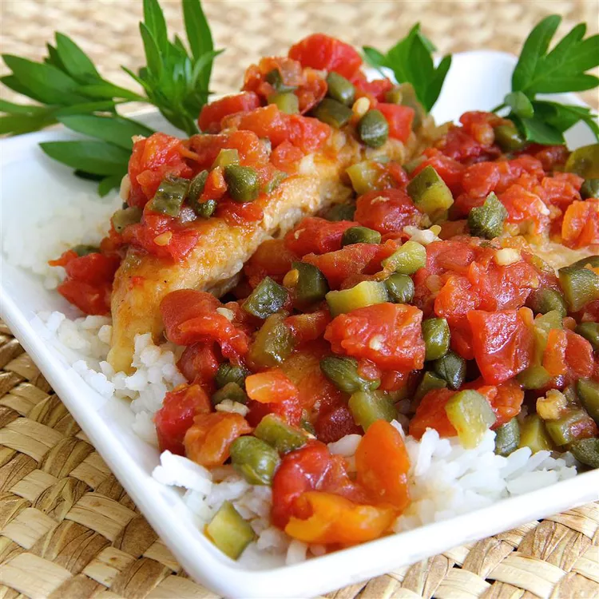

Chicken Piquant

Easy Spicey Chicken Ready In 30 Min or Less!
Great for a cold winter night.
Ingredients
½ teaspoon Creole seasoning (such as Tony Chachere's®)
1 (16 ounce) package boneless, skinless chicken breast tenders
1 (10 ounce) can diced tomatoes with green chile peppers (such as RO*TEL®)
¼ cup diced sweet pickles
2 tablespoons red wine vinegar
2 tablespoons drained capers
Directions
STEP 1
Mix flour and Creole seasoning together in a shallow bowl. Dredge chicken through the flour mixture, shaking of excess.
STEP 2
Heat oil in a skillet over medium-heat. Cook chicken in the hot oil until browned, about 2 minutes per side. Add diced tomatoes with green chile peppers, pickles, vinegar, capers, and garlic to chicken;
simmer until chicken is no longer pink in the center, about 10 minutes more.